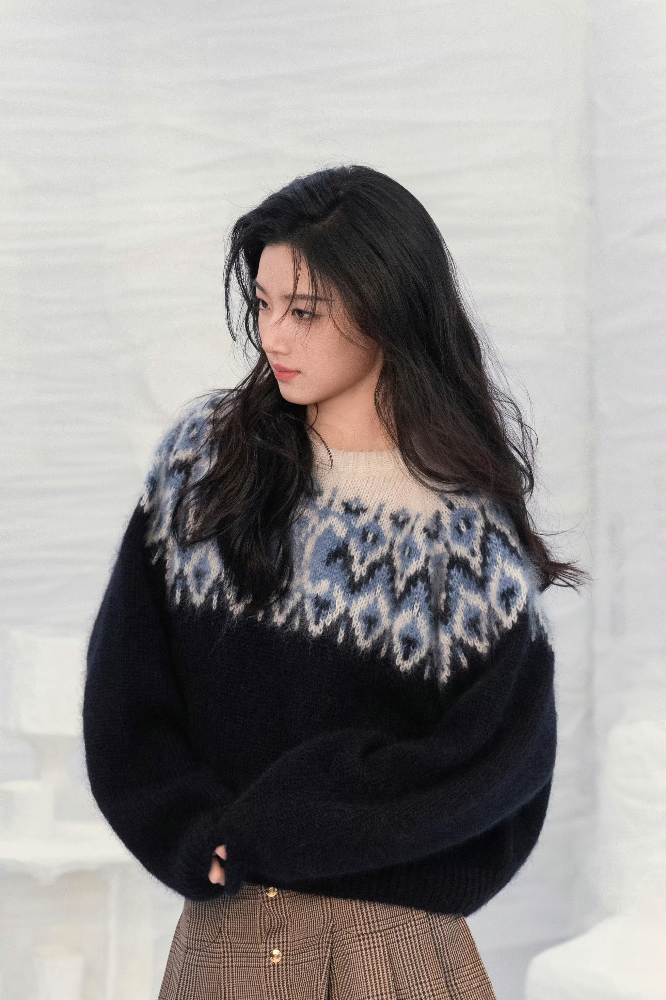
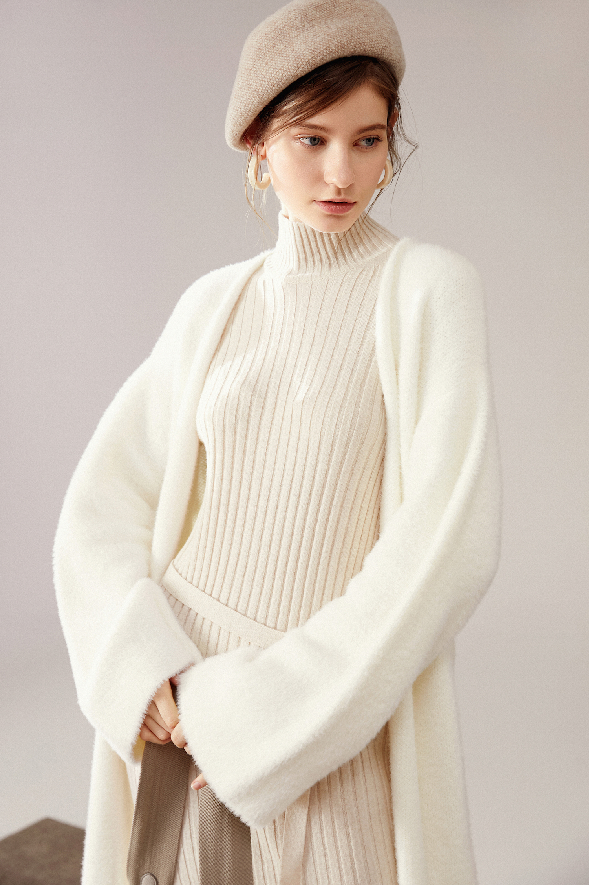
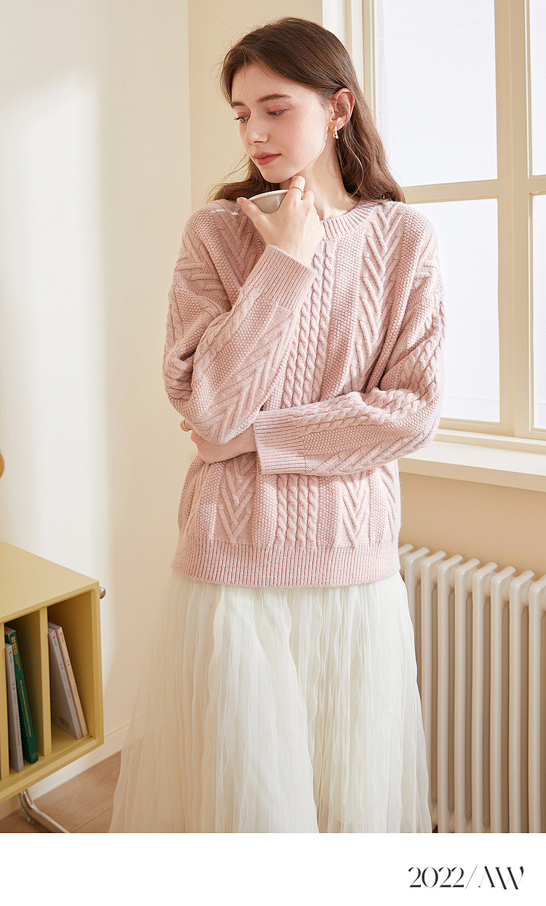
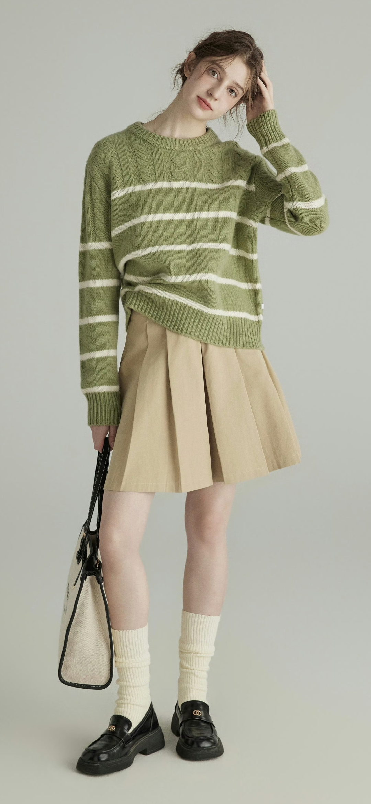
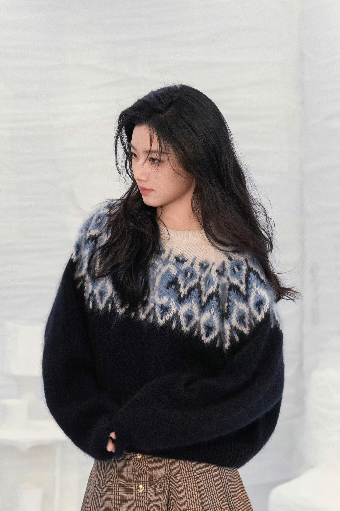
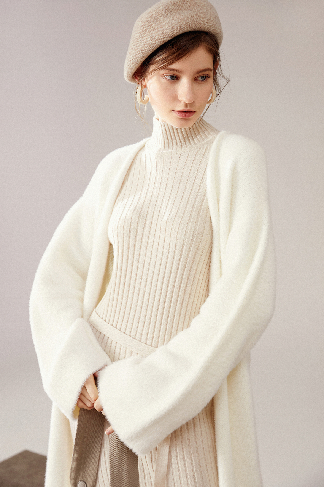
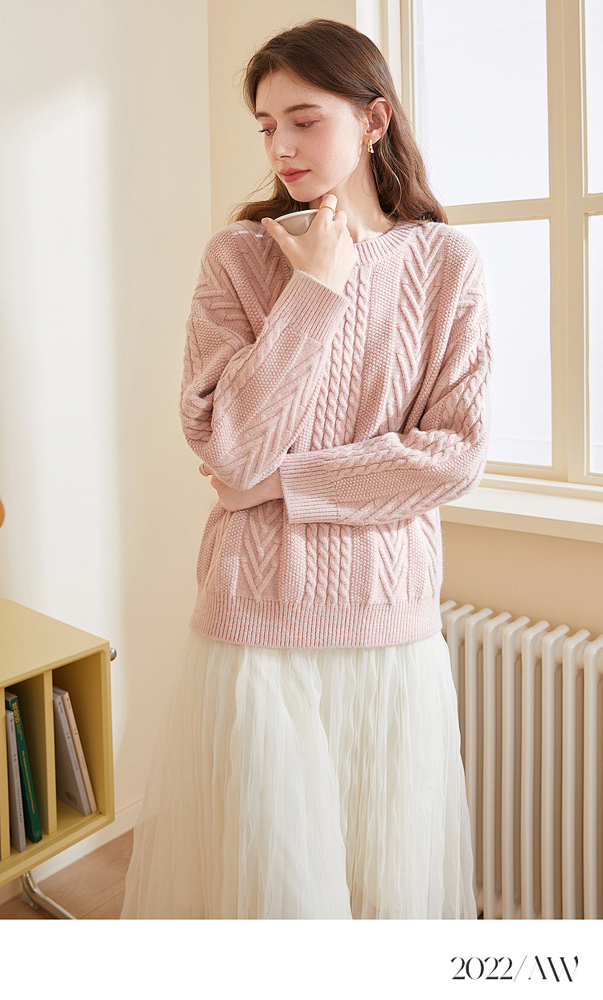
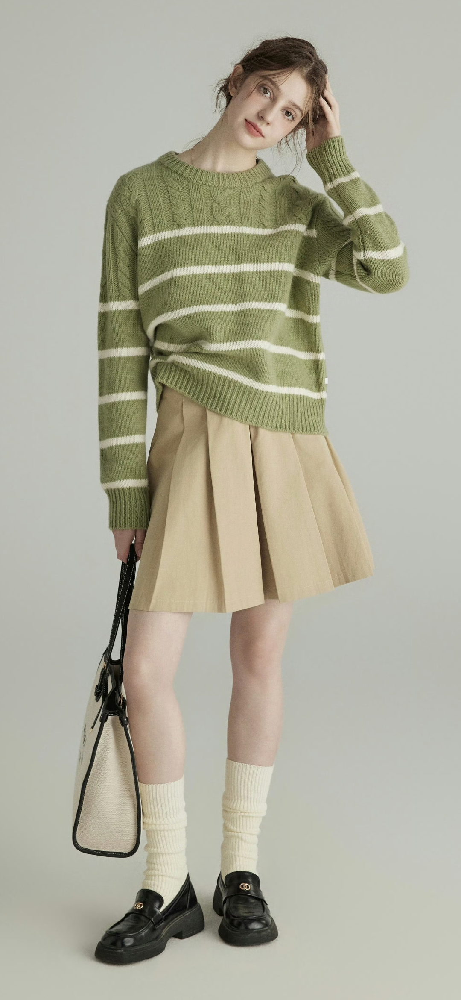

Welcome to FleeceEase factory.
More stable supply, higher efficiency, and better quality.
供应稳定，更高效，更高质。
About us
We are a company specialized in the production of knitted wool garments,located in Dongguan,a manufacturing hub in China. We are commiteed to providing high-quality knitted wool products to customers worldwide,covering a wide range of fashion apparel,homegoods,and more. With advanced production equipment and a skilled technical team,we are capable of customizing various styles and designs to meet both small-batch and large-scale production demands.We strictly control every step of the process to ensure that our products meet the clients' standaeds.We look forward to collaborating with you to create a brighter future togeter.
我们是一家专门从事针织羊毛服装生产的公司，位于中国的制造业中心——东莞。我们致力于为全球客户提供高质量的针织羊毛产品，涵盖广泛的时尚服装、家居用品等。凭借先进的生产设备和一支技术精湛的团队，我们能够定制各种风格和设计，以满足小批量及大规模生产的需求。我们严格控制生产过程中的每一个环节，以确保我们的产品符合客户标准。我们期待与您合作，共同创造更加美好的未来。
good_yarn
毛线
good_knitting_process
编织工艺
A vast and stable market supply, higher efficiency, reliable raw material supply, and high-end knitting technology that can be practiced at will. Excellent quality is synonymous with us.
广大稳定的市场供应，更高的效率，来源可靠的原材料供应，随心可实践的高端针织工艺。 优良的品质是我们的代名词。
good_product
产品
good yarn
High quality fibers, soft and comfortable, available in various colors and sizes to meet different weaving needs.
优质纤维，柔软舒适，多种颜色和规模可选，满足不同编织需求。
good knitting process
Strict material selection, fine cutting, precise sewing, striving for both comfort and durability. Combining manual and machine sewing, rigorously inspecting every detail to meet customer needs.
严格选材，精细裁剪，精准缝制，力求舒适与耐用兼具。手工和机缝相结合，严格检验每个细节，以满足客户需求。
good product
 







Fashion
these are part of our products.
我们能做平针 (Single Knit)、罗纹 (Rib Knit)、搓织 (Purl Knit)、圈针 (Circular Knit)等针织结构的衣物产品，兼顾热定型、洗水处理、去毛处理等后整理工序，拥有提花、镂空技术等特别工艺方案。针织衣服的工艺组合使其在时尚界和日常穿着中具有广泛的适用性和表现力。
We are capable of producing knitted garments with various structures, including Single Knit, Rib Knit, Purl Knit, and Circular Knit. We also focus on post-processing techniques such as heat setting, wash processing, and deshedding. Additionally, we offer special craft solutions like jacquard and lace techniques.
contact us
联系我们
ADD
这是地址
这是邮件
phone
这是电话